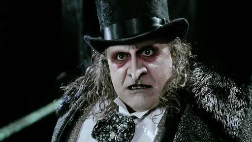

Il Pinguino (Penguin), alter ego di Oswald Chesterfield Cobblepot, è un personaggio dei fumetti DC Comics
creato da Bob Kane (disegni) e Bill Finger (testi). È un gentiluomo del crimine, e uno dei principali e più
famosi nemici di Batman.
Il Pinguino compare per la prima volta nel dicembre 1941 su Detective Comics (vol. 1) n 58. La sua esistenza
editoriale verrà stravolta dal film Batman - Il ritorno del 1992 che ne modificherà la storia e l'aspetto
sino al 1995 quando, con la storia Il trionfo del Pinguino, recupererà i suoi connotati classici e
continuerà la sua criminosa carriera in salita.
Biografia del personaggio
Oswald Cobblepot era un semplice ometto panciuto e con un lungo naso buffo che, associato alla sua passione
per l'ornitologia, fungeva da calamita per gli insulti e le marachelle dei bulli di quartiere.
Cresciuto solo e con un grande risentimento verso il mondo, Oswald si affeziona agli uccelli (animali,
peraltro, venduti nel negozio di famiglia gestito da sua madre, vedova) tanto da essere soprannominato, al
college, Pinguino. Come se il suo aspetto non fosse sufficiente ad attirare scherni, sua madre lo
costringeva a portare con sé un ombrello, per paura che s'ammalasse. Infatti il padre era morto a causa di
una forte polmonite in seguito ad un improvviso temporale. Questa sua stranezza rese ancor più ostili i
compagni verso di lui.
Di questo periodo della sua vita non si sa molto. L'attività di famiglia era in caduta libera e presto i
creditori l'avrebbero fatta sparire. Della vita di Oswald adolescente si conoscono alcuni interessanti
particolari. Per esempio, fu in questo periodo che cominciò a pensare all'ombrello come un'arma. Affilò la
punta del suo ombrello e sfregiò permanentemente il volto del capo dei bulli che lo perseguitavano, tale
Randall Holmes. Significativo l'episodio in cui paga la ragazza più carina della scuola affinché si presenti
al ballo con lui, il ragazzo più brutto. In questo modo, la ragazza fa il primo passo verso quella che sarà
una vita di soli soldi e sesso, mentre Oswald sperimenta le gioie dell'amore e del potere.
Il destino incombe, però. Il negozio chiude, i suoi amati volatili vengono quindi sequestrati e Oswald si
ritrova solo e senza soldi. Il risentimento latente esplode con tutta la sua forza. L'ombrello diviene
un'arma d'offesa, un marchio del neonato criminale in tuba, monocolo e frac. La vendetta diviene la sua
unica ragione di vita (nonché la sua rovina). Nasce il Pinguino, bizzarro criminale amante dei pennuti, del
potere e degli abiti eleganti. Sfida numerose volte Batman, venendo puntualmente sconfitto. Tenta la scalata
al potere nella società malavitosa di Gotham City innumerevoli volte.
Dopo anni ed anni di attività, si ritira dalla scena del crimine e smette i panni del Pinguino per aprire,
coi proventi delle sue azioni criminose, una catena di night club, l'Iceberg Lounge, con cui camuffa la sua
nuova, losca attività: il contrabbando d'armi. La morte del "Romano", ossia Carmine Falcone, gli spalanca le
porte dell'alta società malavitosa e Pinguino diventa uno dei più potenti boss di Gotham City. La sua
maggiore particolarità (nonché arma in un certo senso) è la conoscenza che ha del sottobosco criminale di
Gotham. Non si muove foglia in città senza che il Pinguino lo sappia. Proprio per questo, diverrà uno
strumento di frequente uso per lo stesso Batman, quasi un suo informatore, benché i dialoghi tra i due
restino sempre pungenti e il disprezzo reciproco evidente.
Dopo gli avvenimenti di Giochi di guerra, con l'entrata in scena di un redivivo Maschera Nera, il Pinguino
viene costretto da Batman a lasciare Gotham dopo aver provocato un black out mentre in città imperversa il
caos dovuto alle guerre tra gang rivali. Si trasferisce, quindi, a malincuore a Bludhaven, dove però diviene
il nuovo boss (nella storia Tarantula fa capire che il precedente boss Blockbuster è stato sconfitto e che
quindi c'è un vuoto di potere).
In La Notte del Pinguino Cobblepot ritorna a Gotham e, come l'Enigmista, si finge un brav'uomo, dedito solo
agli affari. Così ha vinto la sua battaglia contro la società e contro Batman. È ricco sfondato e nessuno
può toccarlo. Durante questa storia, Pinguino esterna il desiderio di voler aprire filiali dell'Iceberg
Lounge in tutta l'America e di voler creare un marchio tutto suo da vendere a prezzi elevati ma dalla
realizzazione a basso costo (tramite lo sfruttamento di minori all'estero).
Abilità
Il Pinguino è uno dei maggiori criminali di Gotham City e della DC Comics e rappresenta una minaccia per
chiunque, compresi Batman, Robin e Batgirl.
La sua mente geniale è predisposta al mondo del crimine, del sotterfugio, degli affari e della finanza. Si
occupa di ogni genere di affare losco a Gotham City, che spazia dal traffico di armi e droga, al riciclaggio
di denaro e al mercato nero. È anche in grado di tornare al suo stile di vita lussuoso piuttosto facilmente,
nonostante la sua storia criminale violenta e la sua fedina penale. Il Pinguino fa affidamento sull'astuzia,
sull'intelligenza e sull'intimidazione per sfruttare i suoi dintorni a scopo di lucro e, nonostante la sua
irascibilità, viene normalmente descritto come più razionale e lucido di molti cattivi di Batman, o almeno
relativamente.
Il Pinguino è inoltre un grande inventore: prova lo sono i continui ombrelli letali che utilizza, i quali
celano diversi tipi di armi come mitragliatrici, lame taglienti, gas tossici o soporiferi, lanciafiamme e
bazooka (tuttavia, il personaggio è in grado di armare i suoi ombrelli in una varietà quasi illimitata di
modi). A seconda dello scrittore, alcuni dei suoi ombrelli possono trasportare più armi contemporaneamente.
Porta spesso un ombrello che può trasformare il suo baldacchino in una serie di pale rotanti: può essere
usato come un elicottero in miniatura o come arma offensiva; spesso lo usa per sfuggire. Il baldacchino
dell'ombrello è a volte raffigurato come uno scudo resistente ai proiettili.
Si dimostra ingegnoso nel creare piani strategici che mettono alla prova Batman. Dato che può vantare una
cospicua ricchezza, il Pinguino può permettersi di assoldare mercenari, metaumani e ladri per compiere i
suoi crimini. Ma la caratteristica peculiare del Pinguino è il possedere informazioni di qualunque genere in
qualsiasi ambito, dimostrando in questo modo di essere anche in controllo di una fitta rete di spie e
informatori in tutta la città. La sua conoscenza è più ampia di quella di chiunque altro a Gotham City,
Batman incluso. Molte volte il Cavaliere Oscuro ha dovuto estorcere, in vari modi, informazioni dal Pinguino
per avere dati fondamentali in determinate indagini, che non poteva scoprire in alcun altro modo. Pinguino
viaggia sempre con scagnozzi in qualsiasi missione criminale ed è esperto di leadership organizzata:
controlla guardie del corpo, chef, servi, membri di bande, criminali e così via con un talento magistrale.
Oswald ha condotto operazioni legali e illegali all'interno di Gotham City e in qualsiasi condizione.
Il Pinguino, appassionato di uccelli fin dall'infanzia, è anche un addestratore aviario. Durante la sua
carriera criminosa, ha dato prova di aver ammaestrato una moltitudine di uccelli (avvoltoi, piccioni
viaggiatori, asionini, corvi, colibrì, fringuelli e pinguini) a derubare appartamenti, compiere sabotaggi e
aggredire un nemico.
Nonostante la sua apparenza e statura, è straordinariamente agile e veloce, ed è un pericoloso combattente
corpo a corpo con abbastanza abilità da autodidatta in judo, scherma, ninjutsu e pugni a mani nude per
sopraffare gli attaccanti. Il Pinguino viene solitamente raffigurato come un combattente fisico capace
quando sente che la situazione lo richiede, ma il suo livello di abilità varia molto a seconda dell'autore;
il personaggio è stato scritto sia come una partita fisica per Batman sia come qualcuno che il vigilante
mascherato è in grado di sconfiggere con un pugno. Dimostra una certa tolleranza al freddo: Pinguino è in
grado di tollerare temperature sotto lo zero più a lungo della maggior parte delle persone.

Danny DeVito, interprete del ruolo del Pinguino nel film Batman - Il ritorno